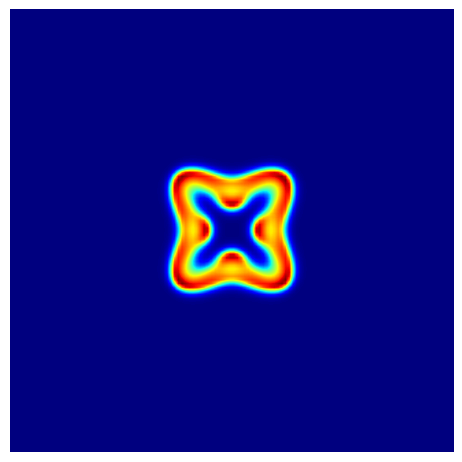

Gray-Scott Model
Build Your Own 2D Reaction-Diffusion Simulator
The Gray-Scott model is one of the cleanest examples of reaction-diffusion pattern formation. It combines diffusion with an autocatalytic reaction and produces spots, stripes, worms, and labyrinths depending on the parameters (Gray and Scott 1984; Pearson 1993).
This is the next step after the 2D Gierer-Meinhardt page. The grid, the Laplacian, and the Euler loop are the same. The new ingredient is the reaction term, which is simple to write and much richer visually.
The PDE system is
\[ \begin{aligned} \frac{\partial u}{\partial t} &= d_1 \Delta u - u v^2 + f(1-u), \\ \frac{\partial v}{\partial t} &= d_2 \Delta v + u v^2 - (f+k) v, \end{aligned} \tag{1}\]
where \(d_1\) and \(d_2\) are the diffusion coefficients, \(f\) is the feed rate, and \(k\) is the kill rate.
Start from the Homogeneous State
Gray-Scott is usually initialized near the steady state \((u, v) = (1, 0)\), then a small patch is perturbed.
import numpy as np
n = 250
dt = 2.0
uv = np.ones((2, n, n), dtype=np.float32)
uv[1] = 0.0
c = n // 2
r = 12
# TODO: perturb a square patch around the center
# Set u close to 0.5 and v close to 0.25 in that patch
# TODO: add 10% Gaussian noise inside the same patch
Hint: Gray-Scott initialization (click to expand)
uv[0, c - r : c + r, c - r : c + r] = 0.5
uv[1, c - r : c + r, c - r : c + r] = 0.25
noise = 0.1 * np.random.randn(2, 2 * r, 2 * r)
uv[:, c - r : c + r, c - r : c + r] *= 1 + noiseReuse the 2D Laplacian
We will start with the 5-point stencil. If you implemented the previous page cleanly, you can reuse that helper almost unchanged.
import numpy as np
def laplacian(field):
# TODO: write the 5-point stencil with np.roll
return lap
Hint: 5-point stencil (click to expand)
def laplacian(field):
lap = -4 * field
lap += np.roll(field, shift=1, axis=0)
lap += np.roll(field, shift=-1, axis=0)
lap += np.roll(field, shift=1, axis=1)
lap += np.roll(field, shift=-1, axis=1)
return lapImplement the Gray-Scott PDE
import numpy as np
def gray_scott_pde(t, uv, d1=0.1, d2=0.05, f=0.040, k=0.060):
u, v = uv
lu = laplacian(u)
lv = laplacian(v)
# TODO: compute the autocatalytic term uv^2
uv2 =
# TODO: write du_dt and dv_dt
du_dt =
dv_dt =
return np.array([du_dt, dv_dt])
Hint: Gray-Scott PDE (click to expand)
def gray_scott_pde(t, uv, d1=0.1, d2=0.05, f=0.040, k=0.060):
u, v = uv
lu = laplacian(u)
lv = laplacian(v)
uv2 = u * v * v
du_dt = d1 * lu - uv2 + f * (1 - u)
dv_dt = d2 * lv + uv2 - (f + k) * v
return np.array([du_dt, dv_dt])Time Step and Animate
Because np.roll() wraps around the array, this implementation already uses periodic boundary conditions.
import matplotlib.animation as animation
import matplotlib.pyplot as plt
fig, ax = plt.subplots(figsize=(6, 6))
im = ax.imshow(uv[1], cmap="jet", interpolation="bilinear", vmin=0, vmax=1)
ax.axis("off")
def update_frame(_):
# TODO: advance uv by one or more Euler steps
im.set_array(uv[1])
return [im]
ani = animation.FuncAnimation(fig, update_frame, interval=1, blit=True)
Hint: Gray-Scott animation (click to expand)
def update_frame(_):
nonlocal uv
for _ in range(20):
uv = uv + gray_scott_pde(0, uv, d1=0.1, d2=0.05, f=0.040, k=0.060) * dt
im.set_array(uv[1])
return [im]Parameter Sets
Try the following values with \(d_1 = 0.1\) and \(d_2 = 0.05\):
- Type A: \(f = 0.040\), \(k = 0.060\)
- Type B: \(f = 0.014\), \(k = 0.047\)
- Type C: \(f = 0.062\), \(k = 0.065\)
- Type D: \(f = 0.078\), \(k = 0.061\)
- Type E: \(f = 0.082\), \(k = 0.059\)
Which sets create isolated spots? Which ones create stripes or moving fronts?
Optional: 9-Point Stencil
If you want to compare stencils, adapt your Laplacian to include diagonal neighbors and compare the visual effect.
What’s Next?
The base solver is done. In the next page, we will keep the same PDE update and wrap it with interaction: drawing perturbations, pausing the simulation, and changing parameters with sliders.
Tip
Reference code is available in amlab/pdes_2d/gray_scott.py.
References
Gray, Peter, and Stephen K. Scott. 1984. “Autocatalytic Reactions in the Isothermal, Continuous Stirred Tank Reactor: Isolas and Other Forms of Multistability.” Chemical Engineering Science 39 (6): 1087–97. https://doi.org/10.1016/0009-2509(84)87017-7.
Pearson, John E. 1993. “Complex Patterns in a Simple System.” Science 261 (5118): 189–92. https://doi.org/10.1126/science.261.5118.189.